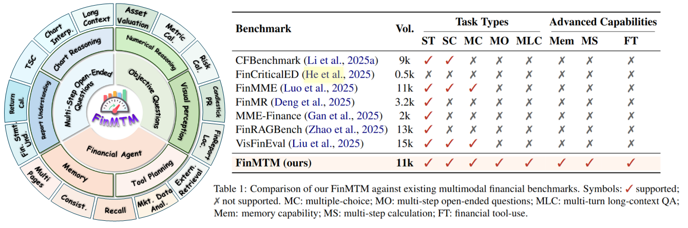
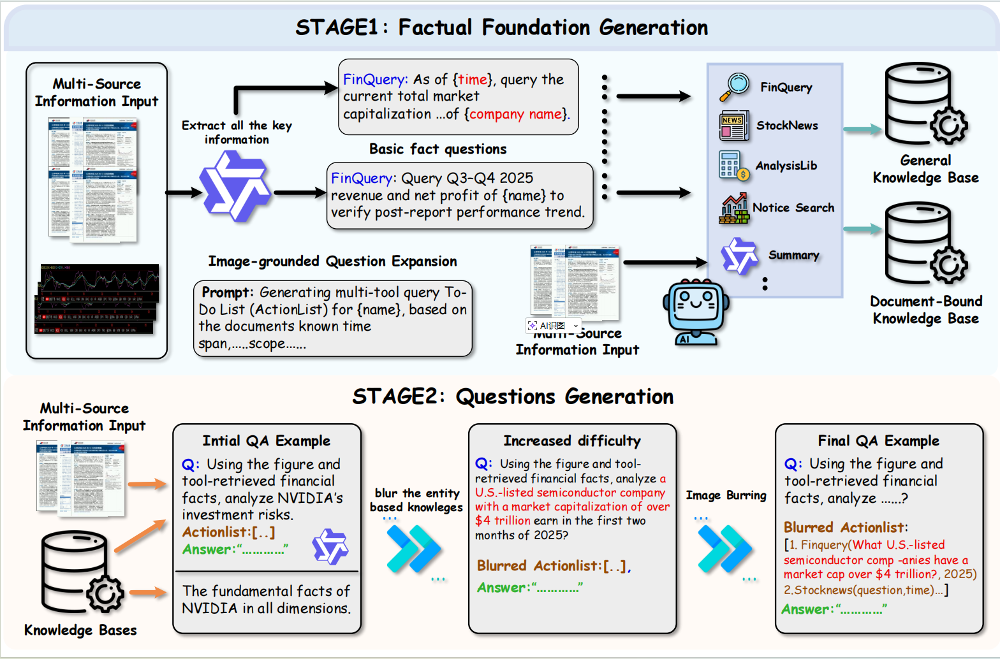
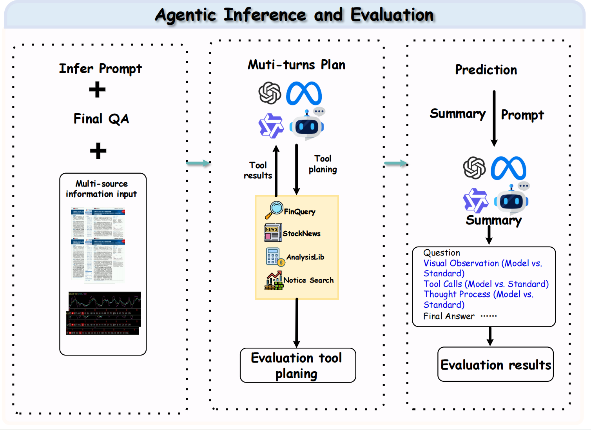
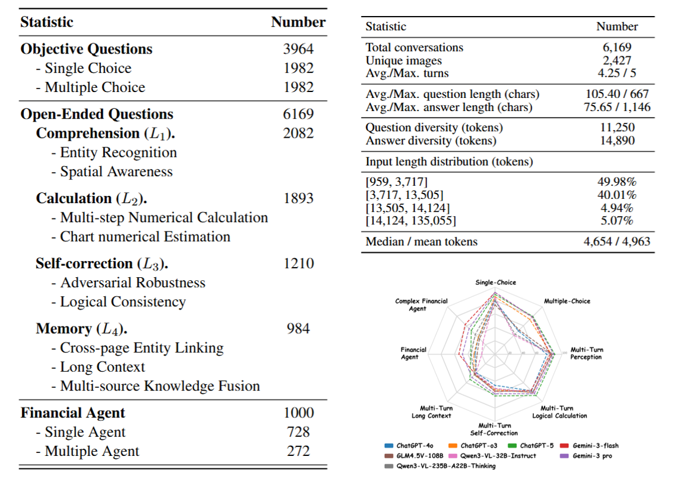
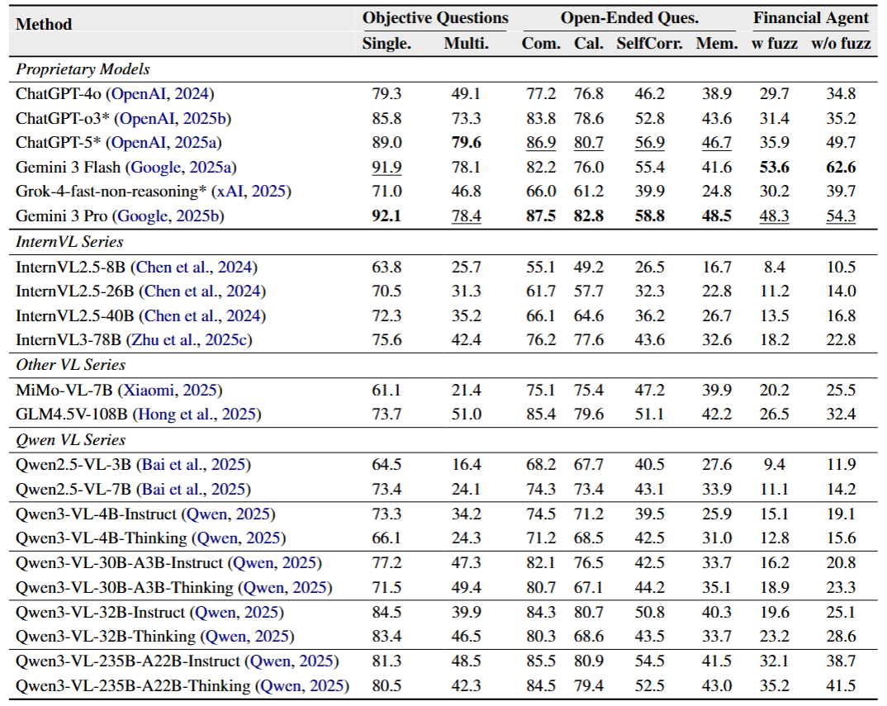

FinMTM:
FinMTM:
A Multi-Turn Multimodal Benchmark for Financial Reasoning and Agent Evaluation
Abstract
The financial domain poses substantial challenges for vision-language models (VLMs) due to specialized chart formats and knowledge-intensive reasoning requirements. However, existing financial benchmarks are largely single-turn and rely on a narrow set of question formats, limiting comprehensive evaluation in realistic application scenarios. To address this gap, we propose FinMTM, a multi-turn multimodal benchmark that expands diversity along both data and task dimensions. On the data side, we curate and annotate 11{,}133 bilingual (Chinese and English) financial QA pairs grounded in financial visuals, including candlestick charts, statistical plots, and report figures. On the task side, FinMTM covers single- and multiple-choice questions, multi-turn open-ended dialogues, and agent-based tasks. We further design task-specific evaluation protocols, including a set-overlap scoring rule for multiple-choice questions, a weighted combination of turn-level and session-level scores for multi-turn dialogues, and a composite metric that integrates planning quality with final outcomes for agent tasks. Extensive experimental evaluation of 22 VLMs reveal their limitations in fine-grained visual perception, long-context reasoning, and complex agent workflows.
Overview
•Data Collection
FinMTM is a robust multimodal benchmark curated from real-world financial workflows, integrating diverse data from U.S. and Chinese corporate disclosures, research reports, and financial media. The dataset is structured around three core components: expert-validated objective questions utilizing a "negative selection" paradigm to enhance evaluative rigor; multi-turn open-ended dialogues categorized into a four-level cognitive hierarchy (L1–L4) that blend automated generation with manual refinement for realistic interaction; and a sophisticated financial agentic pipeline that synthesizes verifiable tool-calling trajectories through knowledge-base integration and entity-obfuscation strategies. By combining professional fidelity with high-difficulty task design, FinMTM provides a comprehensive framework for benchmarking the long-context reasoning, retrieval, and decision-making capabilities of models in authentic financial scenarios.

•Financial Agent Question Generation
To construct high-quality benchmarks for financial intelligence, FinMTM employs a two-stage synthesis pipeline designed to generate verifiable agentic trajectories and tool-calling sequences. The process begins with the establishment of two specialized knowledge bases—a general factual repository (K1) and a document-centric base (K2)—which serve as the ground-truth anchors for financial facts and tool parameters. Building upon these, the framework generates initial Q&A pairs that simulate real-world analyst workflows. To ensure the rigor of the evaluation, a specialized "fuzz" strategy is then applied to systematically obfuscate entity priors within the questions and mask sensitive visual regions (such as company names). This approach prevents models from relying on pre-trained memory, forcing the agents to demonstrate authentic retrieval-augmented reasoning and precise tool-use capabilities in complex financial scenarios.

•Evaluation Method
FinMTM employs a rigorous evaluation framework tailored to specific task types. For objective questions, it utilizes a deterministic protocol with a strict overselection rule where any incorrect selection results in a zero score while partial credit is assigned proportionally for correct answers. Open-ended multi-turn dialogues are assessed using a dual-rule strategy that evaluates turn-level capabilities across five dimensions including visual precision, financial logic, data accuracy, cross-modal verification, and temporal awareness combined with session-level checklist verification. Financial agent tasks are measured through a two-stage trajectory-based framework consisting of a planning stage that quantifies tool usage quality via an Fβ score based on functional alignment and a summarization stage evaluating reasoning quality (Qr) and answer correctness (Qa). To ensure high reliability and industry authority, the benchmark implements a multi-model cross-evaluation protocol using LLM judges like GPT-5 and Gemini-3 Pro which is further validated by hierarchical audits from a team of fifteen senior financial experts.

•Statistics
Our benchmark consists of three main tasks with 11,133 questions with 3600 images and 400 PDFs. It covers stocks from both the U.S. and Chinese A-share markets, spanning multiple industries, and reflects diverse real-world financial settings. The objective questions include 1,982 single-choice and 1,982 multiple-choice questions, assessing a model’s basic understanding of financial multimodal information under clearly defined constraints. Open-ended questions contain 6,169 samples, with an average of 4.25 interaction rounds per sample and 4,963 average input tokens. Finally, the financial agent task includes 1,000 samples, all requiring external financial tools. About 73\% of the tasks can be completed using a single tool across multiple calls, while the remaining 27\% require multiple tools. This setting reflects realistic financial analysis and decision-making workflows.

Results on FinMTM
Proprietary models lead across most evaluation dimensions where Gemini 3 Pro excels in open-ended tasks including comprehension and memory while GPT-5 achieves peak performance in multiple-choice questions. Gemini 3 Flash demonstrates the strongest agentic capability for autonomous decision making in both fuzzed and non-fuzzed financial agent scenarios. Although open-source models like the Qwen and InternVL series are competitive in objective single-turn tasks, they exhibit sharp performance degradation in self-correction and long-horizon memory scenarios. This gap underscores the limitations of current open-source models in managing complex multi-step reasoning and tool-based financial workflows.
Demonstrations
• Muti-turn Open-ended Questions
• Financial Agentic Questions
• Objective Questions